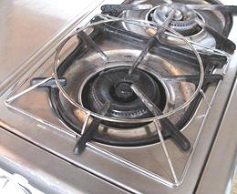

This is the primary cooking pan in India, where it is used for many tasks. It looks much like an East Asian wok, but it differs in having a tighter radius and higher sides. This geometry makes it the best pan for deep frying there is anywhere - you can fry with a minimum of oil, and with amazingly little splatter escaping the pan. The high sides keep both the oil and the heat in where they belong.
It is not surprising that the ultimate geometry for deep frying would be developed in India. A great deal of deep frying is done there, particularly by street vendors but also in the home, and both fuel and oil are very expensive there.
Of course in India the kadhai is used for far more than deep frying.
Many Indian curries and stews are configured for this type of pan, and some
have the word "kadhai" in their title. It is not, however, ideal for Chinese
style stir frying because of the high, steep sides. You can't park stuff
up on the sides like you can with a wok.
The photo specimen, which I use for all my deep frying, regardless of ethnicity, is 14-1/2 inches diameter, made of heavy sheet steel formed in a press (thus some rippling around the edges). It was purchased from an Indian appliance store in Los Angeles. Some North American stores advertise stainless steel kadhais - do not buy them. They do not season well, are soon very ugly looking from baked on oil that's turned to varnish, and stainless steel is a poor conductor of heat. Aluminum is also to be avoided as it can taint acidic foods.
 The downside of the kadhai is the same as for the traditional wok, it is designed for a completely different kind of stove than we have in North America - one that has an opening the pan sits in and is intensely hot in the very center rather than in a ring like our gas stoves. For deep frying I have found the exact distribution of heat is far less important than it is for stir frying.
A wok stand is necessary to use a kadhai on our stoves, and I strongly favor the wire stand shown in the photo to the common sheet metal ring stand. Heat flow is much more natural. Note from the photo that I have cut gaps in the wire so it sits very securely on my burner and brings the pan close to the flame.
I do have a regular sheet metal ring stand which I set out of the way
on the kitchen floor. That way I can quickly move a hot kadhai off the
stove and out of the way when I'm done with it.
More on Iron Cookware.